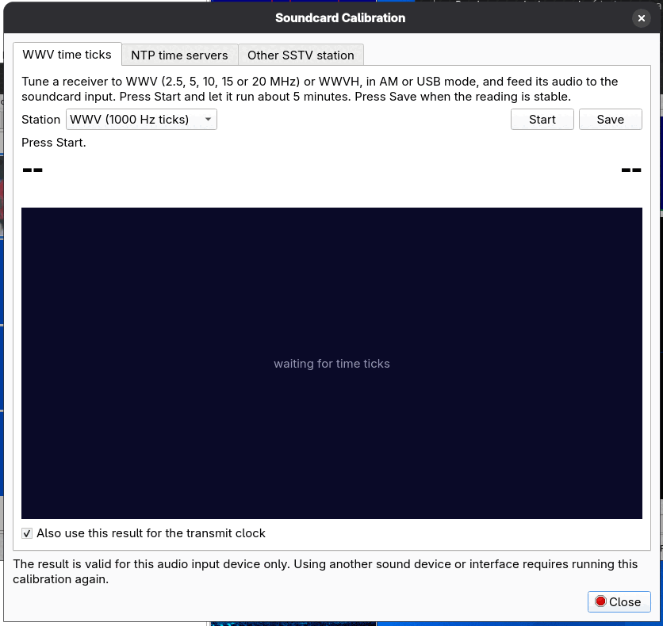
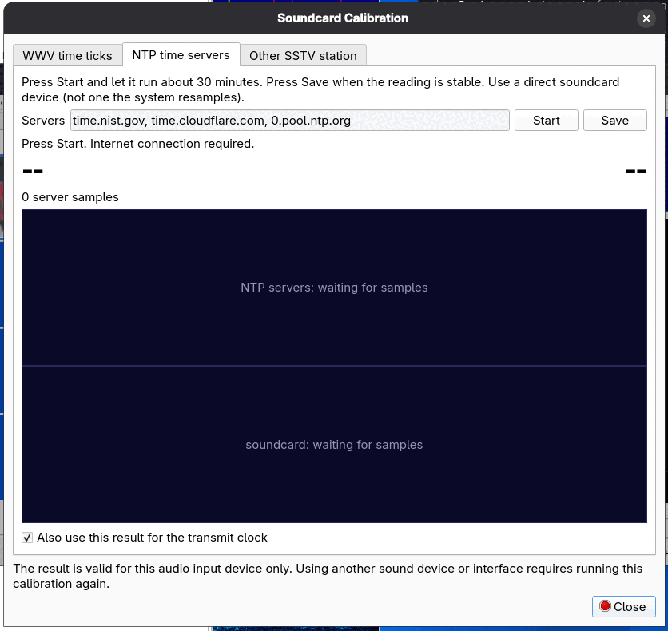
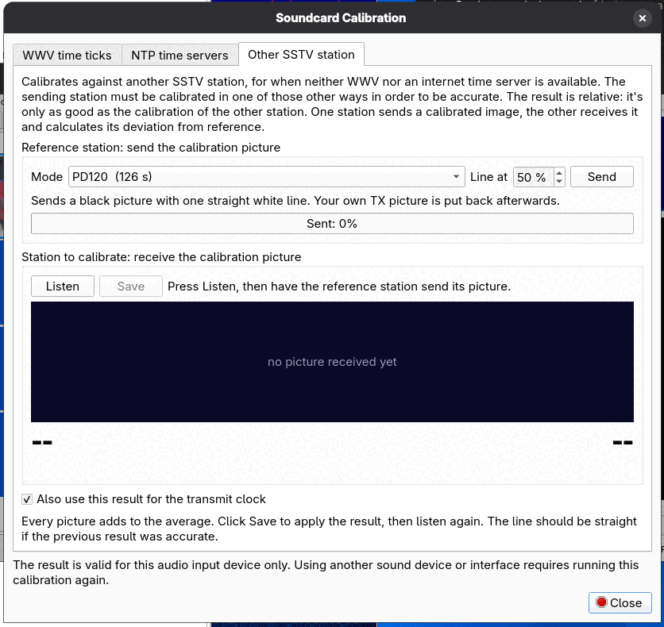

Calibration
Every sound card's clock is slightly off its nominal 48000 samples per second. At the very small errors typical of sound cards the effect on voice is nil, but SSTV is sensitive to it: a picture received from a perfectly accurate sender will lean (slant) if your sound card is a few parts per million off, and the error adds when both stations are off. Calibration measures the real sample rate and stores it in Configuration > Sound (Input Clock Frequency and Output Clock Frequency).
Open Options > Calibrate. The dialog has three tabs; use whichever reference you can reach. The receiver is stopped while the dialog is open and is resumed afterwards.
The result is valid for this audio input device only. Using another sound device or interface requires running the calibration again. Tick Also use this result for the transmit clock to apply the measurement to the output clock as well.
WWV time ticks

- Tune a receiver to WWV (2.5, 5, 10, 15 or 20 MHz) or WWVH, in AM or USB mode, and feed its audio to the sound card input.
- Pick the Station in the list.
- Press Start and let it run about 5 minutes. The program measures the sample rate against the 1-per-second time ticks. The graph shows progress and says "waiting for time ticks" until ticks are heard.
- Press Save when the reading is stable.
NTP time servers

No radio is needed, but you need an internet connection. The program compares the sound card's sample counter against network time from NTP servers.
Press Start, let it run for about 30 minutes, and press Save when the reading is stable. The
Servers box holds a comma-separated list of servers (default time.nist.gov, time.cloudflare.com, 0.pool.ntp.org). Use a
direct sound card device, not one that the system resamples. The longer it runs the more accurate the result: in the developer's testing a 30-minute NTP run
agreed with a 5-minute WWV run to within about 2 ppm on one real sound card.
Other SSTV station

For when neither WWV nor an internet time server is available. This calibrates against another station's sound card, so the result is only as good as that station's own calibration: the sending station should have been calibrated in one of the other ways. The result is relative: it is the deviation of the other station's clock from yours.
- Reference station: pick the Mode (default PD120), the Line at position in percent, and press Send. The program transmits a black picture with one straight white line and puts your own TX picture back afterwards.
- Station to calibrate: press Listen and have the reference station send its picture. The program measures the slant of the line in the received picture.
- Every picture adds to the average. Click Save to apply the result (it stays disabled until there is a result), then listen again. The line should be straight if the previous result was accurate.
After calibrating
The new clock values appear in the Sound configuration page and are used for both reception and transmission. If pictures from a particular station still slant and others do not, the fault is that station's sound card, not yours; Auto Slant on the Receive tab can correct the picture.